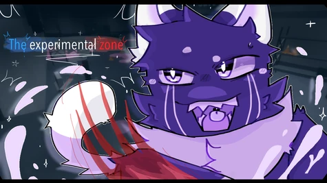

TEZ (The Experimental Zone) is a game on the online-platform called Roblox. Roblox was founded in 2004 by the people David Baszucki and Erik Casse. Roblox was released in 2006 which started a whole new discovery on your computer back then. Roblox is now a multi-billionare dollar company with a net-work of 45 billion US dollars.
Roblox is an online game platform and game creation system developed by Roblox Corporation that allows users to program and play games created by themselves or other users.
In 2023 on July 10th the creator of TEZ created The Experimental Zone. The game at first was not popular at all, not even noticed. Now it is slowly growing into a bigger community, with a community of at least 200+ (estimated) people. The Experimental Zone has a lore based genre to it, leaving it at about one of the top furry games on Roblox, with little to no players.
Made by:
Unknown
Capypaw is the founder of TEZ. Starting from July 10th, 2024, she made and maintained the game we all know and love. They are a 13 year old creator with a passion, that being to have a community where people can express their opinions, as well as a fantastic game to play with.
25hawkeye is one of the 3 head admins within the community. He is known mostly by his critques and minor changes to the game, making this wiki (I see you!), and overall managing the discord server on a daily basis.
Harvest is the founder of the community regulated Fandom Wiki.
-The Experimental Zone- | The primary group, housing the main communication platform
TEZC-A SRD | Scientific research division, where all the experiments are conducted
TEZC-B SD | The security division, in charge of monitoring and assisting the facility
TEZC-C ED | Event division, hosts parties, celebrations, and schedules important tasks around the facility